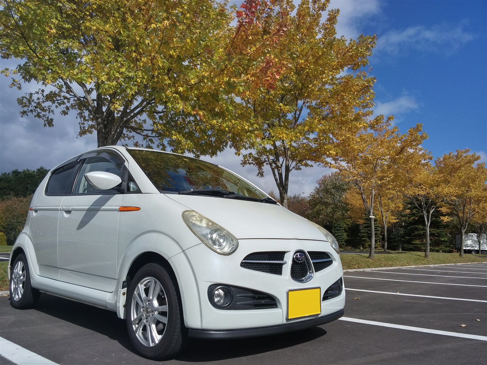
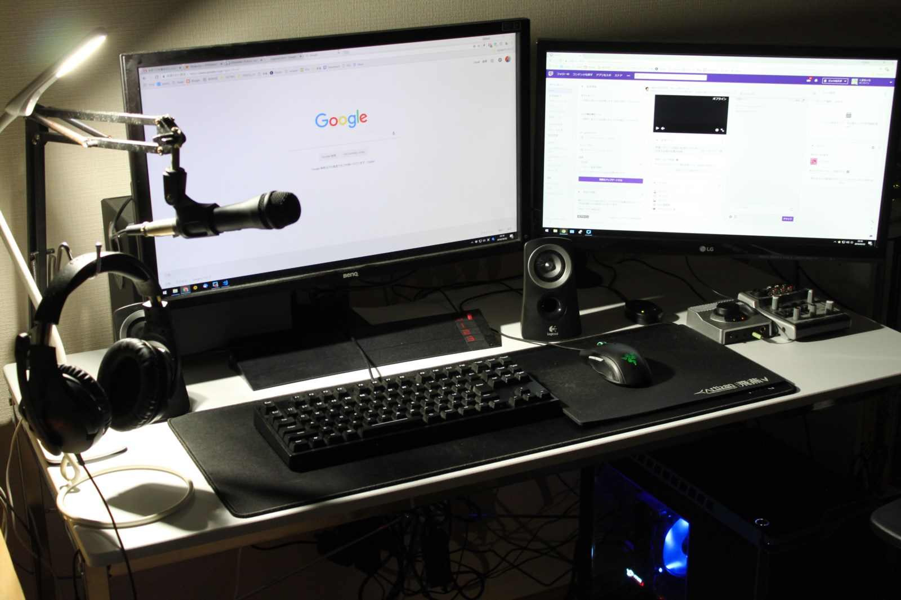
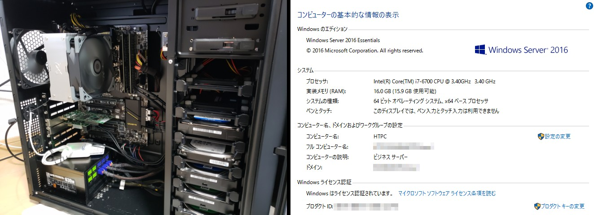
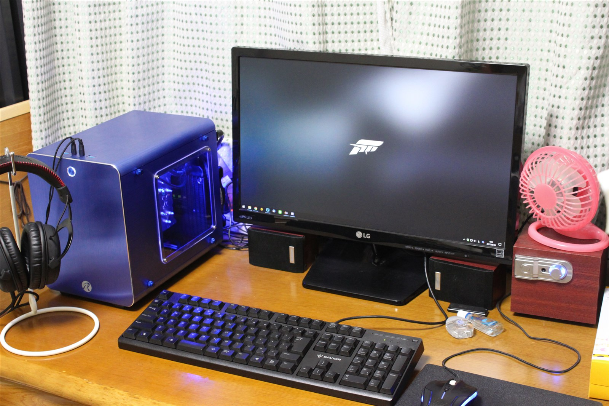
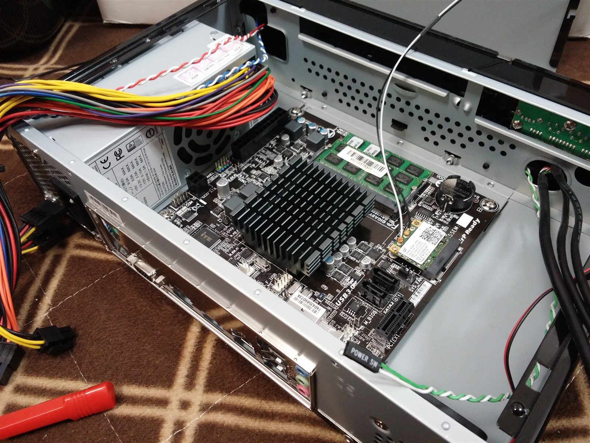

Illustrator: @nyomosuke |
|
Self-Introduction
- プロフィール
- 愛車
- PC
スバル R2
| Comment | 2015年5月より、移動の足として使うために購入したスバルR2です。非力ですが4WDで軽いので冬の雪道でもらくらく走れます。人生初のマイカーはスバルの軽ですが、十分に満足して楽しんでいます。外装には殆ど手を付けていませんが、Androidタブレットのカーナビ化やオーディオの交換、エンジンスターターの取り付けなど内装・電装品に関してはちまちまと弄っています。 |
|---|
メインPC
| Case | NZXT H440 (Black + Blue) |
|---|---|
| MotherBoard | ASRock H170 Combo |
| CPU | Intel Core-i7 6700 |
| CPU Cooler | Scythe 虎徹 + OWL-FY1225PWMSB |
| Memory | PATRIOT MEMORY DDR3-1333 (8GBx2) |
| GraphicCard | msi GTX970 GAMING 4G |
| SSD (OS) | SK Hynix SL300 (240GB) |
| SSD (Games) | Samsung 840Series (120GB) + 850EVO (240GB) |
| HDD (Data) | WesternDigital WD20EZRX (2TB) |
| PSU | Scythe KAMARIKI Platinum SPKRP-600 (600W 80+PLATINUM) |
| OS | Windows10 Home (64bit) |
| KeyBoard | iBUFFALO BSKBC02BK |
| Mouse | Razer Taipan |
| Headphone | iBUFFALO BSHSUH05BK (5.1ch) |
| Monitor | BenQ XL2420Z (1920x1080 144Hz) |
| Comment | 函館の自宅で使用している、メインのPC。今時のゲームをプレーするのに不足しない十分なスペックがあり、ゲームから動画エンコードまでそつなくこなす。ただしスリープが正常に働かない持病あり。 |
録画・サーバーPC
| Case | SilverStone SST-PS07B |
|---|---|
| MotherBoard | ASUS AM1M-A |
| CPU | AMD Athlon 5350 |
| CPU Cooler | Arctic Alpine M1 Passive |
| Memory | CFD Elixir W3U1600HQ-4G (4GBx2) |
| SATACard | ProjectM PCIX2-4PSATA3 |
| TV-Chuner Card | PLEX PX-W3PE Rev.1.3 |
| SSD (OS) | Transcend TS64GSSD340(64GB) |
| HDD (Data) | WesternDigital WD20EZRX(2TB) |
| HDD (TVrec1) | WesternDigital WD20EZRX (2TB) |
| HDD (TVrec2) | WesternDigital WD30EZRZ-RT (3TB) |
| PSU | 玄人志向 KRPW-P630W/85+ (630W 80+BRONZE) |
| OS | Windows8.1 (64bit) |
| KeyBoard | Pokemon Typing Keyboard (Bluetooth) |
| Mouse | Softbank SB-MO01-BTLS (Bluetooth) |
| USB DAC | TSdrena HAM-UDAA2 |
| Headphone | AKG K601 |
| Monitor | LG Flatron E2242 (1920x1080) |
| Comment | 函館の自宅で使用している、テレビ録画用PC。低消費電力のAthlon5350を利用し、24時間稼働のサーバー機としても動作。ゲームサーバーやVPNサーバー、ファイルサーバーなどとして活用中。 |
実家用サブPC
| Case | RAIJINTEK METIS (Blue) |
|---|---|
| MotherBoard | ASUS H81I-PLUS |
| CPU | Intel Pentium G3258 (4.4GHz OverClocked) |
| CPU Cooler | CoolerMaster Seidon120XL + Corsair SP120 QE LED (Blue) |
| Memory | PATRIOT MEMORY DDR3-1600 (4GBx2) |
| GraphicCard | PowerColor AXR9 270 2GBD5-TDHE/OC |
| SSD (OS) | ADATA SP900 (128GB) |
| HDD (Data) | HGST 2.5inch HDD (640GB) |
| PSU | 玄人志向 KRPW-SX400W/90＋ (400W 80+GOLD SFX) |
| OS | Windows10 Home (64bit) |
| KeyBoard | iBUFFALO BSKBC02BK |
| Mouse | FOXXRAY FXR-BM-05 |
| Headphone | iBUFFALO BSHSH12BK |
| Monitor | LG 22MP47HQ-P (1920x1080 AH-IPS) |
| Comment | 東京の実家で使用している、サブPC。Mini-ITXサイズの小型ケースに、簡易水冷を搭載して倍率ロックフリー版PentiumをOCして使用中。グラフィックボードもそれなりにパワーの有るR9 270を使用しているのである程度のゲームまではプレー可能。 |
実家用録画サーバーPC
| Case | Century CF-A6719BK150 |
|---|---|
| MotherBoard | GIGABYTE GA-J1800N-D2H |
| CPU | Intel Celeron J1800 (OnBoard) |
| Memory | S.O.DIMM DDR3-1333 (2GBx2) |
| TV-Chuner | PLEX PX-S1UD V2.0 |
| HDD (Data) | Unknown 2.5inch HDD (500GB) |
| OS | WindowsServer2012R2 Essentials (64bit) |
| Comment | 東京の実家で使用している、テレビ録画用PC。Mini-ITXサイズの小型ケースにファンレス省電力のマザーを詰め込んでいる。テレビ東京とTOKYO MXさえ録画できればいいので、地上波1波のみのUSBタイプチューナーを採用して録画を行っている。 |